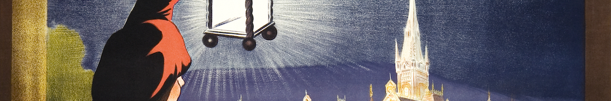

# These functions both return their argument
f1 <- function(x) x
f2 <- function(x) invisible(x)
f1(1) # This prints[1] 1f2(1) # This does notNovember 13, 2022

What if I told you that you could do some pretty amazing things, not loading any packages at all?
Admittedly, some of these functions are not from base R but from stats, which are also imported when you open up R.
The invisible() function “returns a temporarily invisible copy of an object”. For a quick example from the documentation:
# These functions both return their argument
f1 <- function(x) x
f2 <- function(x) invisible(x)
f1(1) # This prints[1] 1The way to see invisible output is by saving to a variable or running print(). These will print:
Many of your favorite functions use invisible(). For example, readr::write_csv() invisibly returns the data frame that was saved.
If you’re writing functions, then invisible() can be very helpful.
tidytab::tab_run()) together results in two NULL list items that I do not need.library(purrr)
dat <-
tibble::tibble(
col1 = c(3, 2, 2, 1, 2, 1),
col2 = c(1, 2, 1, 1, 3, 2),
ct = c(2, 2, 2, 2, 2, 2)
)
vars <- c("col1", "col2")
# Install from devtools::install_github("gvelasq/tidytab")
tab_run <- function(.x){
dat %>%
tidytab::tab2(.x, ct)
}
purrr::map(.x = vars,
.f = tab_run) │ ct │
col1 │ 2 │ Total
───────────┼───────────┼──────────
1 │ 2 │ 2
2 │ 3 │ 3
3 │ 1 │ 1
───────────┼───────────┼──────────
Total │ 6 │ 6
│ ct │
col2 │ 2 │ Total
───────────┼───────────┼──────────
1 │ 3 │ 3
2 │ 2 │ 2
3 │ 1 │ 1
───────────┼───────────┼──────────
Total │ 6 │ 6 [[1]]
NULL
[[2]]
NULLRunning invisible() eliminates that!
│ ct │
col1 │ 2 │ Total
───────────┼───────────┼──────────
1 │ 2 │ 2
2 │ 3 │ 3
3 │ 1 │ 1
───────────┼───────────┼──────────
Total │ 6 │ 6
│ ct │
col2 │ 2 │ Total
───────────┼───────────┼──────────
1 │ 3 │ 3
2 │ 2 │ 2
3 │ 1 │ 1
───────────┼───────────┼──────────
Total │ 6 │ 6 This is useful for generating intermediate diagnostics or for saving multiple output formats.
The noquote() function “prints character strings without quotes.”
Resources
split
encodeString
nzchar
file.choose()
lengths
with